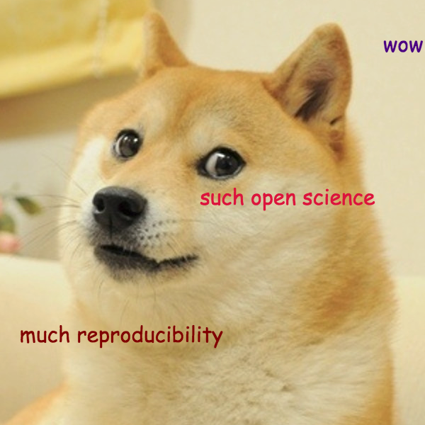

Software & best practices to facilitate open science
Scott Chamberlain (@sckottie/@ropensci)
UC Berkeley / rOpenSci


scotttalks.info/phos16
LICENSE: CC-BY 4.0
Open Science
software tools
Software tools are important
- nearly all researchers use software
- majority say research impossible without software
- software is widespread even in less traditionally technical fields
- software use is moving towards open source
- most are self-trained coders
- most researchers DO NOT stay in academia
Software is not cited
37% of mentions involve formal citations
28% provide any version information
20% of the software mentioned is inaccessible in any form
20% is available as source code form with permission to modify
Incentives are for:
Papers
Grants
More papers
And more papers
maybe teaching
so, software is essentially not even on the list
Resistance to change
Some academics tend towards non-open tools (b/c what they know?)
Convincing PIs difficult b/c above, and they're busy
Reach out to graduate students -> they can change from below
Gov't Funders: All the new are belong to us!
Funders want new findings - that is, new software
Essentially no way to fund infrastructure sustainably
Universities don't want to pay salaries for software engineers
Evidence of above: vibrant non-profit culture surrounding academia funded by private foundations
There are hopeful signs though ...
Para-acdemic guild

open source R/Python taking over


[^1]: O'Reilly Data Science Salary Survey
[^2]: Muenchen, R. A. (2012). The popularity of data analysis software. UR L http://r4stats. com/popularity.
Research reproducibility can be low

Open science is still hard ...
... lessons learned:
Script everything and rebuild from source
Establish a data-processing pipeline
Version control (git) & code sharing site (github)
Embrace openness
source code: dfalster/baad
rOpenSci origin
formed from ad-hoc conversation over blogs/Twitter
by the need to make research easier/more reproducible
now worldwide community
https://ropensci.org/community
rOpenSci Staff
ropensci.org/about/#staff4 full time
now including a community mananger!
leadership team
great advisory board
rOpenSci Community
https://ropensci.org/community
Community stats
250 code contributors
343 Github repositories
30,000 commits
a few pkgs with >1,000 commits
113 published R packages
rOpenSci tools
Data acquisition
data manipulation/analysis/viz
writing
publish
Data acquisition
data manipulation/analysis/viz
writing
publish
Data acquisition
data manipulation/analysis/viz
writing
publish
Data acquisition
data manipulation/analysis/viz
writing
publish
Data acquisition
data manipulation/analysis/viz
writing
publish
rOpenSci Tools
https://ropensci.org/packages
Software Best Practices
continuous integration
unit testing
consistent style (within reason)
thorough documentation (can always be better though)
DRY code
best practices for many small pieces?
a lot of practices around large projects
hard to keep track of all the projects
bigger chance of reinventing wheels
how to make a resilient contributor base?
be really nice!!!
> 1 contributor
direct access to dedicated contribs
contributor diversity
turn users into contribs
Open science software and funding closely linked
because lack of incentives in academia & perhaps hard to get into software
Make software work easier: incentives
make software count for tenure/grad school
more funding opportunities
more jobs making software in academia
Make software work easier: remove barriers
make path academia to industry easy
provide software training
???
rOpenSci Software Review
Completely open source tools
Free to run
All reviews/conversations in the open
Reviews are/can be linked to code changes
Paired with submission to a journal - JOSS

Software Review: Rising Tide Raises All Boats
People really like software review


Software Review: Spread it Around
we're experimenting with how to package up the workflow and make it easy to deploy
let us know if you have any feedback on the process
To Wrap Up
Software is important
But software not appreciated
Para-academics/rOpenSci model for long-term software sustainability
rOpenSci: software best practices, community based
Moving forward
rOpenSci: expand to more disciplines
use rOpenSci model in other disciplines
What are barriers to using open source?
What is least reproducible part of your workflow? (which software part?)
Do you see change towards more open source in your world?
What can software people do better?
xxx
xxx